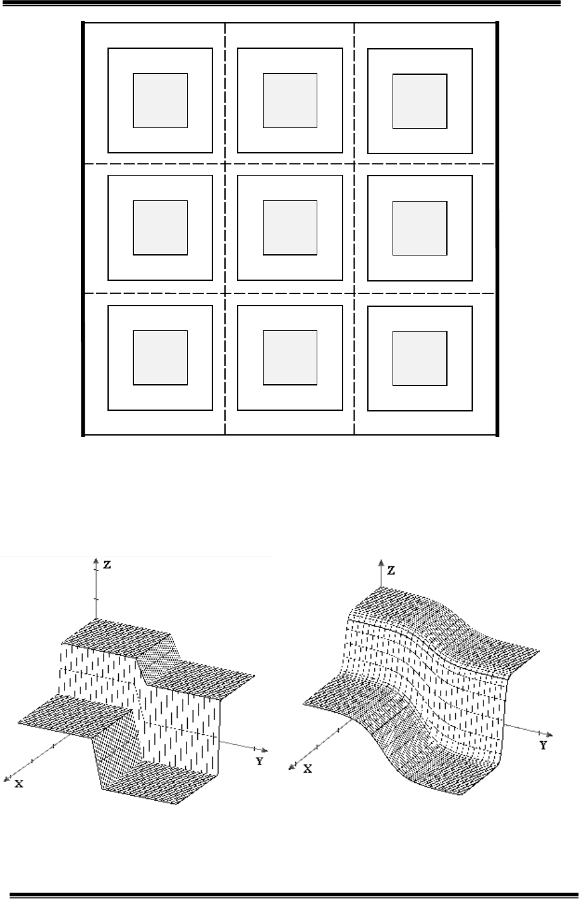

Радіоелектроніка біомедичних технологій
118 Вісник Національного технічного університету України «КПІ»
Серія — Радіотехніка. Радіоапаратобудування. — 2013. — №55
УДК 621.372.061
ВЫБОР КОЛИЧЕСТВА ЧАСТОТ ДЛЯ ПРОВЕДЕНИЯ
ЭЛЕКТРОИМПЕДАНСОМЕТРИИ БИОЛОГИЧЕСКИХ
ОБЪЕКТОВ В РЕАЛЬНОМ ВРЕМЕНИ
Тимошенко Г. В., аспирант
Национальный технический университет Украины
«Киевский политехнический інститут», Киев, Украина
SELECTING THE NUMBER OF FREQUENCIES FOR REAL TIME
ELECTROIMPEDANCEMETRY OF BIOLOGICAL OBJECTS.
Timoshenko G.V., Postgraduate Student
National Technical University of Ukraine «Kyiv Polytechnic Institute», Kyiv, Ukraine
Введение
В некоторых случаях неинвазивное исследование функционального со-
стояния биологических объектов методом электроимпедансометрии необ-
ходимо проводить в реальном времени. Длительное время измерения мо-
жет привести к неточным, размытым результатам, например, при исследо-
вании систем с быстро меняющимся состоянием. Для исследования таких
систем продолжительность измерения, как правило, не должна превышать
10 мс [1]. Использование многочастотного измерителя импеданса в составе
электроимпедансного томографа приводит к увеличению времени иссле-
дования пропорционально количеству пар измерительных электродов
(обычно не менее 16) [2]. Это ещѐ более ужесточает требования к продол-
жительности измерения.
Время, затраченное на измерение при многочастотной импедансомет-
рии, напрямую зависит от количества измерительных частот и длительнос-
ти исследования на каждой из них. Рассмотрим обе составляющие подроб-
нее.
Применяемый при многочастотной импедансометрии сигнал инжекти-
руемого тока представляет собой последовательность радиоимпульсов ра-
зной частоты заполнения с прямоугольной огибающей (Рис. 1). Рассмот-
рим участок сигнала, обозначенный «А». Уменьшение длительности оги-
бающей этого радиоимпульса (с сохранением частоты заполняющего ко-
лебания) приводит к расширению его спектра [3], что влияет на результаты
измерения, так как измеренный импеданс фактически является усреднѐн-
ным по ширине спектра.
Радіоелектроніка біомедичних технологій
Вісник Національного технічного університету України «КПІ» 119
Серія — Радіотехніка. Радіоапаратобудування. — 2013. — №55
Рис. 1. Осциллограмма сигнала инжектируемого тока
при импедансометрии
С другой стороны, недостаточное количество измерительных частот
может привести к потере информации о какой-либо неоднородности в объ-
екте, если она слабо влияет на частотную характеристику импеданса [4].
Таким образом, для разработки измерителей импеданса биологических об-
ъектов, производящих измерения в реальном времени, целесообразно
определить необходимое количество измерительных частот.
Вопрос исследования минимально необходимого количества частот,
для широкополосной биоимпедансометрии уже рассматривался как в оте-
чественной, так и в зарубежной литературе [5–7]. Особенностями этих ра-
бот является применение упрощенной одномерной модели биологического
объекта на основе элементов Фрике и Морзе.
Целью статьи является определение минимально необходимого коли-
чества частот при многочастотной импедансометрии, рассматривая объект
в виде двумерной модели с пространственно распределѐнными параметра-
ми.
Методика и средства исследования
Исследуемая двумерная модель биологического объекта состоит из об-
ластей, являющихся аналогами внутриклеточной и внешнеклеточной жид-
костей, и клеточных мембран (рис. 2). Свойства областей задаются при
помощи определения их параметров: удельной проводимости σ и относи-
тельной диэлектрической проницаемости ε. Внутриклеточная жидкость
обозначена серым цветом, она представляет собой материал с параметрами
σ1, ε1, второй индекс определяет номер клетки (σ11, ε11 — первая клетка, σ12,
ε12 — вторая клетка и т.д.). Каждая серая область окружена тонким слоем
материала с параметрами σ2, ε2. Этот слой имитирует клеточную мембрану.
Между областями σ1, ε1 и σ2, ε2 находится материал с параметрами σ3, ε3,
представляющий собой аналог межклеточной жидкости. Измерительные
электроды представлены двумя эквипотенциальными проводниками, они
обозначены жирными линиями Э1 и Э2.

Радіоелектроніка біомедичних технологій
120 Вісник Національного технічного університету України «КПІ»
Серія — Радіотехніка. Радіоапаратобудування. — 2013. — №55
Рис. 2. Структура двумерной модели биологического объекта
Для максимального правдоподобия модели резкие изменения парамет-
ров межклеточной жидкости на границе нормальных областей и областей с
неоднородностями были сглажены при помощи операции свѐртки с Гаус-
совским ядром [8, 9]. Например, представим случай σ3_5<σ3_4<σ3_2<σ3_1.
Рис. 3а.
Рис. 3б.
Рассмотрим зависимость удельной проводимости σ межклеточной жи-
дкости от пространственных координат в окрестностях точки «А» на
Э
1
Э
2
σ2_1
, ε2_1
σ1_1
, ε1_1
σ2_2
, ε2_2
σ1_2
, ε1_2
σ2_3
, ε2_3
σ1_3
, ε1_3
σ2_4
, ε2_4
σ1_4
, ε1_4
σ2_5
, ε2_5
σ1_5
, ε1_5
σ2_6
, ε2_6
σ1_6
, ε1_6
σ2_7
, ε2_7
σ1_7
, ε1_7
σ2_8
, ε2_8
σ1_8
, ε1_8
σ2_9
, ε2_9
σ1_9
, ε1_9
σ3_1
, ε3_1
σ3_2
, ε3_2
σ3_3
, ε3_3
σ3_4
, ε3_4
σ3_5
, ε3_5
σ3_6
, ε3_6
σ3_7
, ε3_7
σ3_8
, ε3_8
σ3_9
, ε3_9
Радіоелектроніка біомедичних технологій
Вісник Національного технічного університету України «КПІ» 121
Серія — Радіотехніка. Радіоапаратобудування. — 2013. — №55
рис. 2. Эта зависимость приведена на рис. 3а. На рис. 3б приведена эта же
зависимость, но при задании проводимости межклеточной жидкости еѐ ре-
зкие изменения были сглажены.
Моделирование частотных характеристик импеданса объекта проводи-
лось в среде Comsol Multiphysics [11]. В данной программе была использо-
вана описанная выше двумерная модель. Начальные параметры модели
приведены в таблице ниже:
Межклеточная жи-
дкость
Клеточная мембра-
на
Внутриклеточная
жидкость
σ, См
0.01
0
0.01
ε
5
100
5
Рассчитывались амплитудно-частотная и фазочастотная характеристи-
ки импеданса модели на 100 фиксированных частотах, логарифмически
расположенных в полосе частот от 100 Гц до 10 МГц. Это выполнялось с
использованием процедуры «AC Analysis» САПР’а Comsol Multiphysics.
Моделировались неоднородности, имитирующие физические процессы ги-
дратации, дегидратации и отмирания ткани. Процессы гидратации и деги-
дратации сопровождаются соответственно понижением и повышением со-
противления тканей вследствие повышения или понижения объѐма прово-
димой среды — межклеточной и внутриклеточной жидкости. Изменение
сопротивления тканей i-й клетки осуществлялось изменением параметров
σ1_i и σ3_i, значения которых варьировались в пределах до ± 50% от началь-
ного состояния. Разные начальные соотношения межклеточной и внутрик-
леточной жидкости, присущие реальным тканям, моделировались измене-
нием соотношения между σ1_i и σ3_i (1:1, 1:2, 1:10 и наоборот). Ёмкость
мембраны, как правило, достаточно постоянная величина, но быстрое еѐ
изменение происходит, прежде всего, при отмирании ткани. При этом ѐм-
кость мембраны может изменяться почти в 5 раз (-80%) [7], что моделиро-
валось изменением параметров ε2_i.
Методом перебора рассматривались все возможные варианты располо-
жения одной и двух неоднородностей в модели. При этом исключались ва-
рианты с одинаковыми частотными характеристиками, которые связаны с
наличием в модели осей симметрии. В результате анализа всех возможных
вариантов расположения одной и двух неоднородностей в структуре объе-
кта (29008 вариантов) было установлено, что АЧХ импеданса во всех слу-
чаях не имела экстремумов, но первая производная АЧХ по частоте имела
до 5-и экстремумов. Фазочастотная характеристика и еѐ производная име-
ли не более одного экстремума. Критерием точного описания внутренней
структуры модели является возможность с заданной точностью воспроиз-
ведения еѐ АЧХ и ФЧХ, используя результаты измерения импеданса на не-
котором наборе частот. Для определения количества частот в наборе при-
менялся алгоритм, представленный на рис. 4. Рассмотрим процедуру при-
менения этого алгоритма для АЧХ.
Радіоелектроніка біомедичних технологій
122 Вісник Національного технічного університету України «КПІ»
Серія — Радіотехніка. Радіоапаратобудування. — 2013. — №55
1. Рассчитанная на
100 частотах АЧХ им-
педанса интерполирова-
лась B-сплайном 2-го
порядка.
2. Задавалось нача-
льное (минимальное)
количество частот —
nFmin (3), рассчитыва-
лись их значения (Flist).
Значения частот лога-
рифмически распре-
делялись между заранее
выбранными начальной
и конечной частотами.
3. Зависимость по-
лученных значений мо-
дуля импеданса от час-
тот Flist интерполиро-
валась B-сплайном 2-го
порядка.
4. Проверялась
схожесть этой АЧХ с
полученной в пункте 1.
Критерий схожести заключался в применении метода наименьших ква-
дратов (МНК). Если результирующая сумма квадратов разностей этих двух
АЧХ была меньше заранее выбранного порога, то принималось решение о
схожести этих двух АЧХ. А это значит, что данного количества частот до-
статочно. Если же критерий схожести не выполнялся, то количество частот
nFmin инкрементировалось (увеличивалось на единицу) и выполнялось всѐ
с момента расчѐта значений частот. Порог выбирался исходя из отсутствия
визуальных отличий между начальной и интерполированной частотными
характеристиками.
Проиллюстрируем работу этого алгоритма на примере. На рис. 5 пред-
ставлена измеренная на 100 частотах и интерполированная АЧХ импеданса
модели. На рисунках 6…10 эта АЧХ изображена пунктиром, а сплошной
линией обозначены АЧХ, полученные на 4-м шаге алгоритма, т.е. АЧХ,
интерполированные по nFmin частотам. Отличия рис. 6…10 друг от друга
в разном значении минимального количества частот nFmin, от 3-х до 7-и.
не выполняется
nFmin
=3
Расчѐт зна-
чений ча-
стот Flist
Расчѐт значений ЧХ
на частотах Flist, ин-
терполированной по
100 частотам
Интерполя-
ция по nFmin
точкам
Критерий на
основе МНК
nFmin=
nFmin+1
выполняется
Минимальное ко-
личество частот
nFmin
Рис. 4. Алгоритм определения минимально
необходимого количества частот
Радіоелектроніка біомедичних технологій
Вісник Національного технічного університету України «КПІ» 123
Серія — Радіотехніка. Радіоапаратобудування. — 2013. — №55
Соответствующие значения измерительных частот на рис. 6…10 обозначе-
ны символом ○. Как видно, для случая 7-и измерительных частот (рис. 10),
кривые на графиках очень близки. При этом критерий на основе МНК вы-
полняется, и в результате получено минимальное количество частот, рав-
ное семи, для точного описания внутренней структуры модели при помо-
щи АЧХ.
Рис. 5.
Рис. 6
Рис. 7
Рис. 8
Рис. 9
Рис. 10
Результаты исследования
В результате анализа всех возможных вариантов расположения одной и
двух неоднородностей (параметры неоднородностей указаны выше) в
структуре объекта были получены два массива - один для АЧХ, другой для
ФЧХ. Каждый элемент массива является минимальным количеством час-
тот, необходимым для восстановления частотной характеристики импеда-
нса объекта с заданной точностью. Наглядным является представление
Радіоелектроніка біомедичних технологій
124 Вісник Національного технічного університету України «КПІ»
Серія — Радіотехніка. Радіоапаратобудування. — 2013. — №55
этих выборок в виде нормированных гистограмм; они приведены на рис.
11 (11.а — для АЧХ, 11.б — для ФЧХ).
Рис. 11а
Рис. 11б
На гистограммах по оси ординат отложено количество комбинаций в
процентном соотношении, для которых количества частот, отложенных по
оси абсцисс, достаточно для восстановления частотных характеристик об-
ъекта с заданной точностью (согласно описанному выше критерию). На-
пример, из рисунка 11а следует, что 4-х частот достаточно в 15% случаев.
Из этих гистограмм можно сделать вывод о минимальном количестве час-
тот, необходимых для исследования частотных параметров импеданса био-
ткани: при анализе только модуля импеданса проводить измерения необ-
ходимо не менее, чем на 7-и частотах, а в случае рассмотрения также и фа-
зы импеданса, измерения следует проводить хотя бы на 16-и частотах.
Достаточное количество частот зависит от выбора начальной и конеч-
ной частоты, что следует детальнее исследовать в эксперименте. Также
дополнительного исследования требует выбор порядка интерполяционного
сплайна; решение этой задачи напрямую связано с методами решения об-
ратной задачи импедансометрии.
Эти результаты получены для случая наличия в исследуемой модели не
более двух неоднородностей. При увеличении количества неоднороднос-
тей до 3-х и более, множество вариантов расположения неоднородностей в
модели настолько возрастает, что время расчѐта на одном процессоре с та-
ктовой частотой 3 ГГц становиться неприемлемо большим для практики
(порядка нескольких месяцев), что обусловливает необходимость рассмот-
рения других подходов для решения этой задачи.
Выводы
Моделирование методом конечных элементов частотных характеристик
импеданса биологического объекта, содержащем в своѐм составе одну или
две неоднородности, площадь каждой из которых не превышают 1/9 пло-
щади двумерной модели объекта, а относительные изменения параметров
неоднородностей составляют не более ±50% для проводимостей и –80%
для диэлектрической проницаемости, показывает что:

Радіоелектроніка біомедичних технологій
Вісник Національного технічного університету України «КПІ» 125
Серія — Радіотехніка. Радіоапаратобудування. — 2013. — №55
для определения с высокой точностью АЧХ импеданса объекта
измерение необходимо проводить не менее чем на 7-и частотах;
при исследовании внутренней структуры биологического объекта на
основе анализа всех параметров частотных характеристик его полного
импеданса (АЧХ и ФЧХ) измерения необходимо проводить не менее чем
на 16-и частотах.
для исследования методом конечных элементов структур с большим
количеством неоднородностей целесообразно рассмотреть возможность
применения других подходов для решения этой задачи.
Литература
1. Физика визуализации изображений в медицине: в 2-х томах. Пер. с англ. / Под
ред. С. Уэбба. — М. : Мир, 1991.
2. Электроимпедансная томография [Электронный ресурс] : (Информационный
портал по вопросам биомедицинской инженерии) / Валид Аль-Хайдари. — Режим
доступа: http://ilab.xmedtest.net/?q=node/47 . — Название с экрана.
3. Хоровиц П. Искусство схемотехники: В 3-х томах / П. Хоровиц, У. Хилл; пер. с
англ.: Б. Н. Бронина и др.. — М. : Мир, 1993. — ISBN 5-03-002336-4.
4. Тимошенко Г. В. О возможности применения трехчастотной импедансометрии
неоднородных биологических объектов / Г. В. Тимошенко // Вісник НТУУ «КПІ».
Серія Радіотехніка. Радіоапаратобудування. — 2013. — №. 54. — С. 144—150. [Publ.]
5. Безякіна Д. В. Дослідження частотних параметрів комплексного електричного
імпедансу біотканини // Радіоелектроніка та молодь XXI століття ; матер. 6-го
міжнародного молодіжного форуму : зб. наук. праць. Част. 2 / ХНУРЕ. — Харків,
2002. — С. 362—363.
6. Nawarycz T. Triple-frequency electroimpedance method for evaluation of body water
compartments / T. Nawarycz, J. Jankowski, L. Ostrowska // Med. Biol. Eng. Com. —
1996. — Vol. 34. — P. 181—182. [CrossRef]
7. Николаев Д. В. Биоимпедансный анализ состава тела человека / Д. В. Николаев,
А. В. Смирнов, И. Г. Бобринская, С. Г. Руднев — М. : Наука, 2009. — 392 с. —
ISBN 978-5-02-036696-1 (в пер.).
8. Федотов А. А. Измерительные преобразователи биомедицинских сигналов
систем клинического мониторинга / А. А. Федотов, С. А. Акулов. — М. : Радио и связь,
2013. — 250 с. — ISBN 978-5-89776-016-9.
9. Айчифер Э. С. Цифровая обработка сигналов: практ. подход / Э. С. Айчифер,
Б. У. Джервис ; пер. с англ. — М. : Издательский дом «Вильямс», 2004. — 992 с. —
ISBN 5-8459-0710-1.
10. Гонсалес Р. Цифровая обработка изображений в среде MATLAB / Р. Гонсалес, Р.
Вудс, С. Эддинс. — М. : Техносфера, 2006. — 616 с. — ISBN 5-94836-092-X.
11. Pryor R.W. Multiphysics Modeling Using COMSOL: A First Principles Approach /
R.W. Pryor. // Jones & Bartlett Learning, 2009. — 852 p. — ISBN-13: 978-0-7637-7999-3.
References
1. Webb S. eds. (1988) The Physics of Medical Imaging. Adam Hilger, Bristol and
Philadelphia, 600 p. (Russ ed. : Webb S. eds. Fizika vizualizatsii izobrazheniy v meditsine.
Moscow, Mir Publ., 1991)
2. Valid Al'-Hajdari Jelektroimpedansnaja tomografija. Available at:

Радіоелектроніка біомедичних технологій
126 Вісник Національного технічного університету України «КПІ»
Серія — Радіотехніка. Радіоапаратобудування. — 2013. — №55
http://ilab.xmedtest.net/?q=node/47.
3. Horowitz P., Hill W. (1989) The art of electronics. Cambridge University Press. (Russ
ed. : Horowitz P., Hill W. Iskusstvo shemotehniki, Moscow, Mir Publ., 1993.)
4. Timoshenko G.V. (2013) Using the three-frequency bioimpedance measurement for
inhomogeneous biological objects. Visnyk NTUU»KPI». Ser. Radiotekhnika.
Radioaparatobuduvannia, no. 54, pp. 144-150. Available at: http://radap.kpi.ua/index.php/
radiotechnique/article/view/676 (in Russian).
5. Beziakina D. V. (2002) Doslidzhennia chastotnykh parametriv kompleksnoho
elektrychnoho impedansu biotkanyny [The study of frequency parameters of complex
electrical impedance of biological tissues]. Trudy 6-ho mizhnarodnoho molodizhnoho forumu
«Radioelektronika ta molod XXI stolittia» [Proc. 6th Int. Youth Forum «Radioelectronics and
youth in 21st century». Kharkiv: KhNURE, pp. 362-363.
6. Nawarycz T., Jankowski J., Ostrowska L. (1996) Triple-frequency electroimpedance
method for evaluation of body water compartments. Med. Biol. Eng. Com., Vol. 34, pp.181-
182. doi: 10.1109/IEMBS.1996.646326
7. Nikolaev D. V., Smirnov A.V., Bobrinskaja I.G., Rudnev S.G. (2009) Bioimpedansnyj
analiz sostava tela cheloveka [Bioimpedance analysis of the human body]. Moscow, Nauka
Publ., 392 p.
8. Fedotov A. A., Akulov S. A. (2013) Izmeritel'nye preobrazovateli biomedicinskih
signalov sistem klinicheskogo monitoringa [Measuring transducers of biometric signals of
clinical monitoring systems]. Moscow, Radio i svjaz' Publ., 250 p.
9. Ifeachor E. C., Jervis B. W. (2002) Digital Signal Processing: A Practical Approach.
2nd ed. Pearson Education, 933 p. (Russ ed. : Ifeachor E. C., Jervis B. W. Cifrovaja obrabotka
signalov: prakticheskij podhod. Мoskow, Vil'jams Publ., 2004, 992 p.)
10. Gonzalez R. C., Woods, R. E., Eddins, S. L. (2009). Digital image processing using
MATLAB. Knoxville: Gatesmark Publishing (Russ ed. : Gonsales R. Cifrovaja obrabotka
izobrazhenij v srede MATLAB. Moscow, Tehnosfera Publ., 2006, 616 p.)
11. Pryor R.W. (2009) Multiphysics Modeling Using COMSOL: A First Principles
Approach. Jones & Bartlett Learning.
Тимошенко Г. В. Вибір кількості частот для електроімпедансометрії біологіч-
них об’єктів в реальному часі.В роботі досліджується питання вибору мінімально не-
обхідної кількості частот при імпедансометрії неоднорідного біологічного об’єкту.
На відміну від більшості існуючих подібних досліджень, в якості моделі використову-
ється двомірна структура, яка складається з областей, що моделюють внутрішньок-
літинну рідину, клітинну мембрану і зовнішньоклітинну рідину 9-и клітин. В модель
вводились неоднорідності — від однієї до двох клітин мали параметри, відмінні від ін-
ших клітин. Перебирались всі можливі комбінації розташування неоднорідностей в
моделі. Досліджувалась можливість відновлення реальних АЧХ та ФЧХ об’єкту по да-
ним, отриманим в результаті вимірювання імпедансу на N частотах. Визначалась мі-
німальна кількість частот N, при якій відновленні частотні характеристики достат-
ньо близькі до реальних. В результаті робиться висновок про мінімальну кількість ча-
стот– 7 для відновлення ЧХ модуля імпедансу та 16 для його фази.
Ключові слова: імпедансометрія біологічного об’єкту, багаточастотна імпедан-
сометрія, вимірювання в реальному часі.
Тимошенко Г. В. Выбор количества частот для электроимпедансометрии биоло-
гических объектов в реальном времени. В работе исследуется вопрос выбора минима-
льно необходимого количества частот при импедансометрии неоднородного биологи-
Радіоелектроніка біомедичних технологій
Вісник Національного технічного університету України «КПІ» 127
Серія — Радіотехніка. Радіоапаратобудування. — 2013. — №55
ческого объекта. В отличии от большинства существующих подобных исследований, в
качестве модели использовалась двумерная структура, состоящая из областей, моде-
лирующих внутриклеточную жидкость, клеточную мембрану, и внешнеклеточную
жидкость 9-и клеток. В модель вводились неоднородности — от одной до двух клеток
имели параметры, отличные от остальных клеток. Перебирались все возможные
комбинации расположения неоднородностей в модели. Исследовалась возможность
восстановления реальных АЧХ и ФЧХ объекта по данным, полученным в результате
измерения импеданса на N частотах. Опредеелялось минимальное количество частот
N, при котором восстановленные частотные характеристики достаточно близки к
реальным. В результате делается вывод о минимальном количестве частот – 7 для
восстановления ЧХ модуля импеданса и 16 для его фазы.
Ключевые слова: импедансометрия биологического объекта, многочастотная им-
педансометрия, измерения в реальном времени.
Timoshenko G. V. Selecting the number of frequencies for real time
electroimpedancemetry of biological objects.
Introduction. Determining the sufficient number of frequencies for biological object
impedance measuring is researched. The presence of one or two object granularities is
considered.
Formulation of the problem. Often impedance measuring is conducted in a real time
conditions. The number of frequencies directly influences measuring time. Existing studies of
frequencies quantity were based on a coarse Krike and Morse impedance model.
Research methods and the results analysis. This work offers method for calculating the
sufficient number of impedance measuring freqencies for biological object, which contains
one or two granularities.
Conclusions. Sufficient number of frequencies for the object containing one or two
granularities was evaluated. Also path for discovering the case three and more granularities
was prompted.
Keywords: measuring impedance of biological objects, multi-frequency impedancometry,
real time real-time measuring.